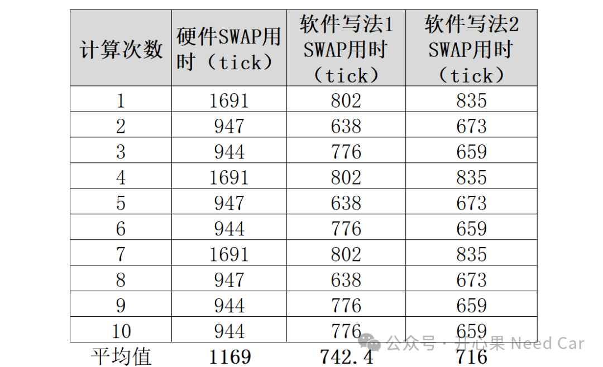

开心果 Need Car · 2025-02-11T06:35:00+08:00 · 微信原文

软件写法1，具体内容如下：
for (uint16 i = 0; i < 32; i++){temp[i] = f[i];//将g[i]赋值给f[i]f[i] = f[i] ^ g[i] ^ f[i];g[i] = temp[i];}
for (uint16 i = 0; i < 32; i++){temp[i] = f[i];f[i] = g[i];g[i] = temp[i];}
硬件操作本文不做展示。提示：本文的硬件操作并不是一条SWAP指令完成，这里涉及硬件初始化及数据准备动作等。
所以，只看统计的数据，会发现：
硬件计算并不比软件计算效率更高
所以，这给了我们什么提示呢？也就是说，如果考虑效率问题，我们不能单一的认为硬件计算效率就一定比软件计算高。而是针对具体问题进行多个维度思考。eg：
问题复杂度，eg：操作对象是否是两个大数或者矢量
运算是否有大量迭代运算，eg：for循环
硬件计算要初始化的时间成本相比计算本身是否开销过大等
所以，针对具体问题时，不能因为硬件可以实现就不加选择的直接硬件计算。
往期精彩回顾
基于Davinci的HSM开发实践（13）：安全启动细节补充